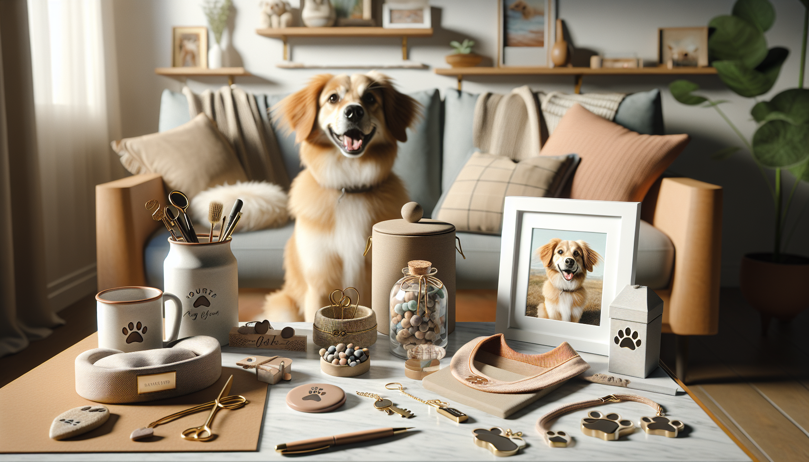

Finding the perfect gift for a dog lover does not have to mean spending a fortune. In fact, some of the most memorable presents are the ones that feel personal, thoughtful, and made just for them. If you have been searching for the best personalized dog gifts under $50, you are in exactly the right place.
Whether you are shopping for a birthday, holiday, gotcha day, Mother’s Day, Father’s Day, or just because, personalized dog gifts add a meaningful touch that ordinary presents simply cannot match. They celebrate the bond between pets and their people while staying within budget. From custom accessories to practical home items, there are so many affordable ways to make a dog parent smile.
In this guide, we are sharing gift ideas that are heartfelt, useful, and easy to love. These personalized dog gifts are perfect for pet owners, dog moms, dog dads, and anyone who treats their pup like family. Best of all, every idea stays under $50, so you can give something special without overspending.
There is something instantly more meaningful about a gift that includes a dog’s name, face, or unique personality. Personalized presents show that you went beyond grabbing something generic off a shelf. You took the time to choose a gift that reflects a beloved pet and the joy they bring every day.
For dog lovers, that emotional connection matters. Dogs are not just pets. They are companions, cuddle buddies, walking partners, and full-fledged family members. A custom gift helps honor that relationship in a way that feels warm and memorable.
Personalized dog gifts also work for many different types of shoppers. If you are buying for a close friend, a spouse, a coworker, or even yourself, custom pet items feel thoughtful without being overly complicated. And since there are many affordable handmade and custom options available online, especially through small shops, it is easier than ever to find something one-of-a-kind under $50.
A personalized dog bandana is one of the most charming and budget-friendly gifts you can buy. These are especially popular because they are cute, practical, and easy for dogs to wear for photos, walks, parties, and everyday adventures.
You can personalize a bandana with a dog’s name, nickname, seasonal phrase, or playful message. Some designs are perfect for holidays, while others are ideal year-round. A custom bandana can make even a simple outing to the park feel extra special.
If you want a gift that feels fun, personal, and instantly usable, a custom dog bandana is hard to beat.
Engraved dog tags are a classic personalized gift for a reason. They are practical, affordable, and deeply personal. A quality tag can include the dog’s name, contact information, and even a cute icon or short phrase that reflects their personality.
Many dog owners appreciate gifts that are both adorable and functional, and engraved tags fit that need perfectly. You can choose from different shapes like bones, circles, hearts, or modern minimalist styles. Some even feature custom fonts and finishes for a polished look.
Because dog tags are usually well under the $50 mark, they are ideal as a standalone gift or as part of a small personalized gift set. Pair one with a matching collar or bandana, and you have a thoughtful present that feels complete without stretching your budget.
If you want a gift with strong emotional impact, a custom pet portrait is always a winner. Personalized pet portraits capture a beloved dog’s face in a creative and meaningful way, making them a wonderful option for dog moms, dog dads, and pet parents who love displaying their furry best friend at home.
There are many budget-friendly styles available under $50, including digital illustrations, watercolor-inspired designs, minimalist line art, and playful themed portraits. Some sellers offer printable files, which can be an especially affordable option if you want a custom piece without paying for framing or shipping.
This kind of gift feels deeply personal because it turns a favorite pet photo into art. It is ideal for birthdays, memorial gifts, housewarming presents, or holidays. If the recipient is the type who fills their camera roll with dog photos, a personalized portrait is almost guaranteed to be a hit.
Dog owners use feeding and treat items every single day, which makes personalized versions especially appealing. A custom treat jar, food scoop, placemat, or bowl mat can instantly add personality to a pet-friendly home while still being practical.
These gifts are great because they combine style with function. A treat jar featuring a dog’s name looks adorable on the kitchen counter and helps keep snacks organized. A custom feeding mat can make mealtime cleaner while adding a touch of personalized charm to the space.
For gift shoppers who want something useful but not boring, personalized pet feeding accessories offer the best of both worlds. They are thoughtful enough to feel special and practical enough to be appreciated every day.
Not every personalized dog gift has to be for the dog. Some of the best affordable options are designed for the humans who love them most. Custom mugs, tumblers, pillows, ornaments, keychains, and signs featuring a dog’s name or face make fantastic gifts for pet owners.
A personalized mug with a dog illustration or funny pet-parent quote is a cozy and easy gift idea. A custom keychain with a pet photo can be both sweet and practical. A small sign for the entryway or leash station can add warmth to a home while celebrating a beloved pup.
These types of gifts are especially good for people who enjoy decor and keepsakes. They are also ideal if the dog already has every toy, treat, and accessory imaginable. Giving the dog parent something personalized helps celebrate their bond in a fresh and memorable way.
For dog lovers who enjoy practical organization, personalized leash holders are a smart and stylish gift. These home items help keep leashes, collars, poop bag dispensers, and walking essentials in one convenient place. Add a dog’s name or a cute phrase, and suddenly a functional storage item becomes a thoughtful custom gift.
You can also consider personalized walk accessories such as custom poop bag holders, travel pouches, or leash charms. These are often available at budget-friendly price points and make excellent presents for new dog owners or anyone who loves daily walks with their pup.
Walk-related gifts are especially appreciated because they fit naturally into a dog owner’s routine. Instead of being tucked away in a drawer, they are used regularly and serve as a daily reminder of your thoughtful gift.
With so many options available, choosing the right gift can feel a little overwhelming. The easiest way to narrow it down is to think about the recipient’s lifestyle, the dog’s personality, and how the gift will be used.
It is also a good idea to order personalized gifts early, especially during holiday shopping seasons. Handmade and custom products often require a little extra production time, but that extra care is exactly what makes them feel so special.
One of the best things about shopping for personalized dog gifts under $50 is realizing that thoughtful does not have to mean expensive. A well-chosen custom gift can feel more meaningful than a high-priced item because it reflects love, attention, and personality.
Whether you choose a personalized bandana, engraved tag, custom portrait, treat jar, mug, or leash holder, the right gift can celebrate the unique bond between a dog and their favorite human. These are the kinds of presents that spark smiles, get used often, and create lasting memories.
If you are ready to find something adorable, affordable, and made with dog lovers in mind, personalized pet gifts are the perfect place to start.
Shop personalized pet products at SnoutAndAbout on Etsy.